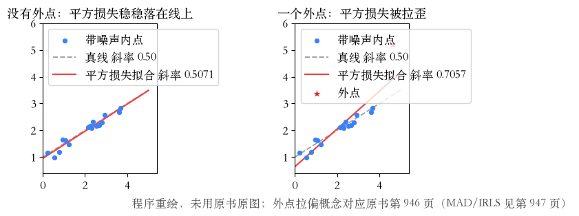
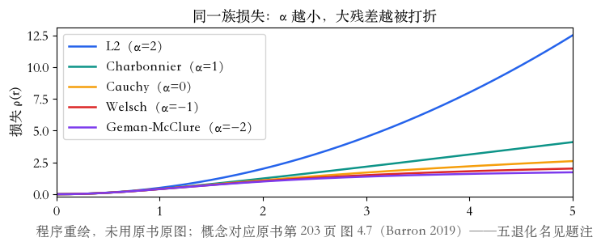
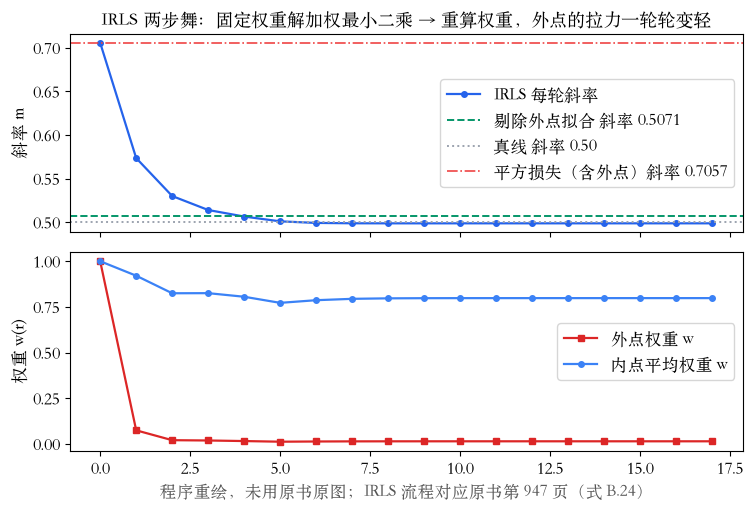

第 4 章鲁棒拟合 + 附录 B.3
数据也会撒谎
上一集留下话头：数据也会撒谎。
这一集把鲁棒拟合和鲁棒统计接起来。
先看外点怎么拉偏平方损失。
再换损失尺子，最后用 IRLS 求解。
依据：原书第 202/945 页
三步
看见外点拉偏平方
换一把鲁棒损失尺子
IRLS 化回最小二乘
正课第二十九集
01 / 6
外点 · 原书第 945–946 页
外点与平方的软肋
高斯噪声是许多小误差叠加的结果。
外点是测量过程的大故障。
来源有三类：坏匹配、双目遮挡、平滑图断裂。
一个外点把斜率 0.5071 拉到 0.7057。
依据：原书第 945–946 页；本集实验

无外点 / 有外点：平方损失被一个外点拉歪｜程序生成，未用教材或论文原图
正课第二十九集
02 / 6
损失函数族 · 原书第 202–203 页
换尺子：一族鲁棒损失
M 估计把平方罚换成罚函数。
α=2 平方，1 沙博尼耶，0 柯西。
α=−1 韦尔施，−2 杰曼-麦克卢尔。
r=5 时，12.5 降到 2.6027，再到 1.7241。
依据：原书第 202–203/946 页；本集实验

五种损失：α 越小，大残差越被打折｜程序生成，未用教材或论文原图
正课第二十九集
03 / 6
影响函数与 IRLS · 原书第 946–947 页
把手劲折成权重
对罚函数求导，得到影响函数。
影响函数除以残差，就是权重。
固定权重解加权最小二乘，再更新权重。
17 轮收敛到 0.4987，外点权重 0.014。
依据：原书第 946–947 页；本集实验

IRLS 轨迹：斜率回到 0.4987，外点权重落到 0.014｜程序生成，未用教材或论文原图
正课第二十九集
04 / 6
定尺度 · 2×2 网格 · 原书第 947 页
尺度交给中位数
尺度 c 该设成内点噪声的标准差。
直接估会被外点污染。
MAD：残差绝对值中位数乘 1.4。
实验 0.3454 收敛到 0.1639，真值 0.15。
依据：原书第 947 页；本集实验
网格读数
韦尔施四终点：0.5066 / 0.4784 / 0.4631 ×2
柯西四终点都在好解 0.02 内
极差：韦尔施 0.0436，柯西 0.0265
更狠的尺子，终点不一定更准
正课第二十九集
05 / 6
作业与移交 · 原书第 510 页起
作业两道，下一集 RANSAC
作业一：推沙博尼耶的影响函数与权重。
作业二：换韦尔施重跑，比较起点与尺度。
下一集 RANSAC：随机抽子集，试一轮投一轮。
阈值和轮数，书里都有讨论。
依据：原书第 510 页起；本集实验
下一集
原书第 510 页起
RANSAC：随机抽小子集
试一轮，投一轮
正课第二十九集
06 / 6